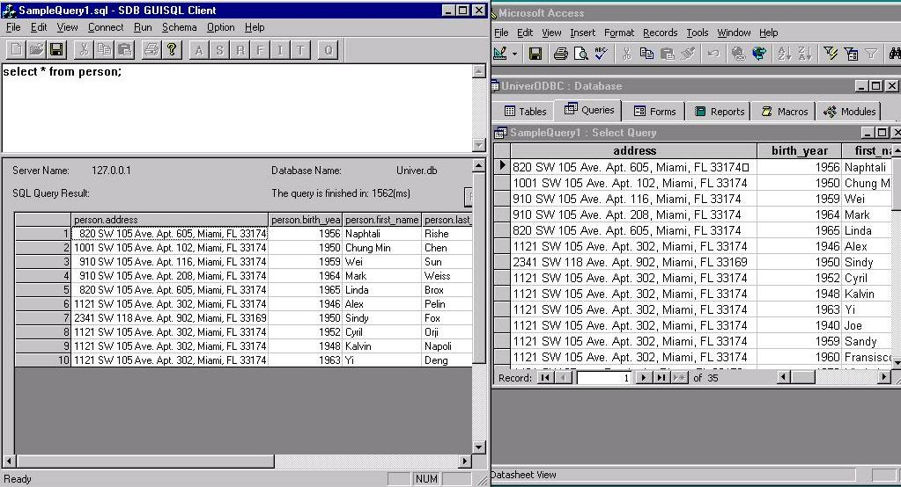

As an example, we run the query "select all the information
about persons in the database" and get the following result. The left window
depicts the result via our native APIs and the right window depicts the
result via the Semantic ODBC driver.
